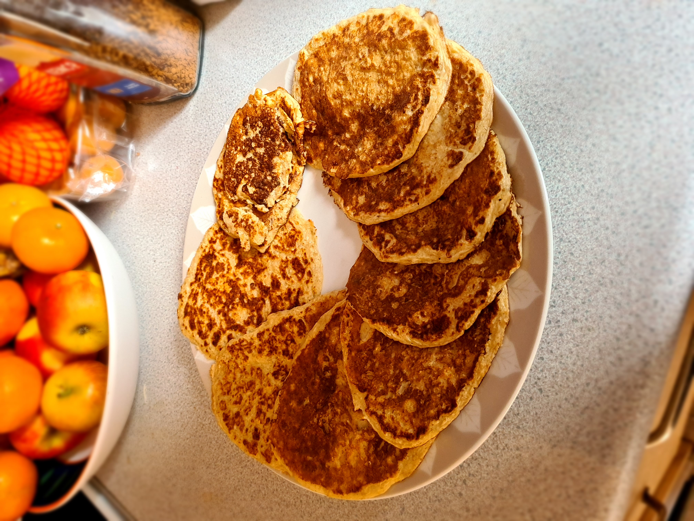

Readybrek Pancakes

Description
Pancakes made using Readybrek instead of flour.
Ingredients (2 servings)
- 2 large eggs
- 80g readybrek (or blended oats)
- 240ml semi-skimmed milk
- pinch of salt
- low-calorie spray oil
Steps
- Add the milk to a jug.
- Crack in two eggs and a pinch of salt, and whisk with a fork.
- Add the readybrek little by little, whisking it until combined.
- Heat up a small frying pan on the stove, then add a few sprays of oil
- Pour a thin layer of pancake batter onto the pan and swirl around.
- Let it cook for around 30 seconds to 1 minute until small air bubles form and it can be flipped without falling apart. Then flip and cook the other side for around 1 minute.
- Repeat until all the mixture is used up, and serve with preferred toppings.